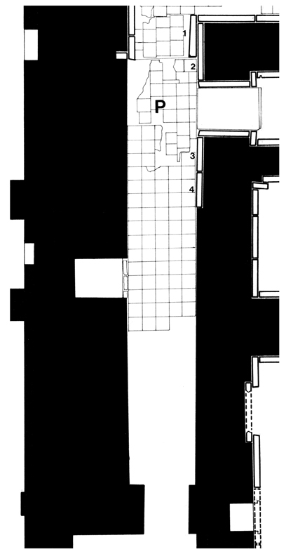

Room P
Room P is a narrow passage which gave access from banquet hall G, via side room N, to the service area in the southeastern part of the palace. Layard found here four slabs—three with reliefs and one (P-1) bearing just the standard inscription. In his description of the room, he emphasizes the high quality of the reliefs: “The four sculptures in the chamber, or rather passage, P …, were remarkable for the beauty of the ornaments and details, and their careful finish.”
Click on P in the middle of the room to see all panels positioned in their respective walls, or on the individual panels along the inner walls and in the entryways to go to CDLI pages associated with them.
 |
Relief Slabs by Collection (duplication results from individual fragments in different places) Arkeoloji Müzeleri, Istanbul, Turkey |